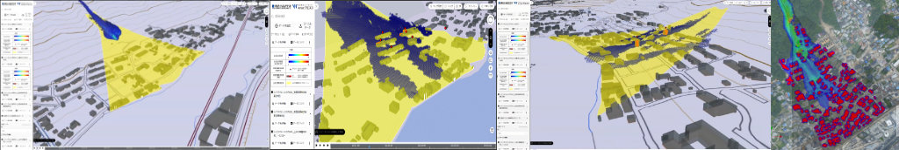

家屋倒壊判定モジュール

本リポジトリでは、Project PLATEAUの令和4年度のユースケース開発業務の一部である UC23-02「精緻な土砂災害シミュレーション」に関する成果物である「家屋倒壊判定モジュール」のソースコードを公開しています。
「精緻な土砂災害シミュレーション」により、PLATEAUの3D都市モデルから得られる建物の形状や配置、さらに、 構造種別等の属性情報を考慮した精度の高い土石流シミュレーションが実施可能となります。
目次
このページには、以下の内容を記載しています。
- 家屋倒壊判定モジュールを用いた土石流シミュレーションの実行方法
- 家屋倒壊判定モジュールのカスタマイズ方法
土石流シミュレーションには、iRIC Morpho2DH（以下、「Morpho2DH」と呼びます）というプログラムを用います。 一方、家屋倒壊判定モジュールを用いた土石流シミュレーションを実行するには、 オリジナルのMorpho2DHをカスタマイズする必要があります。 そのため、最初にオリジナルのMorpho2DHの環境構築と使い方を説明し、その後に、 今回の家屋倒壊判定モジュールを用いた土石流シミュレーションの実行方法を説明します。